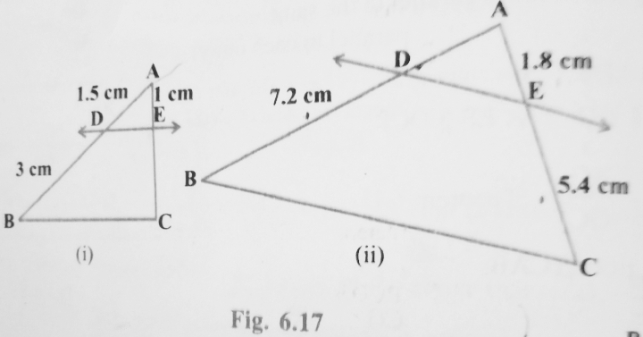
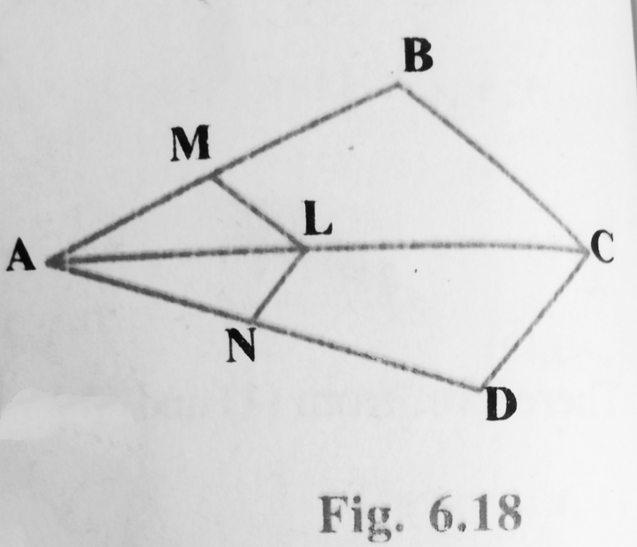
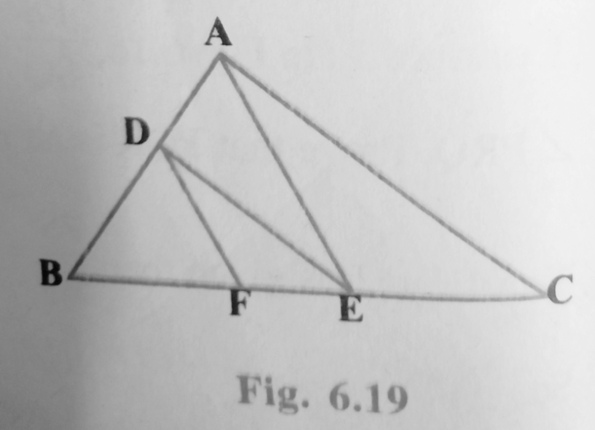
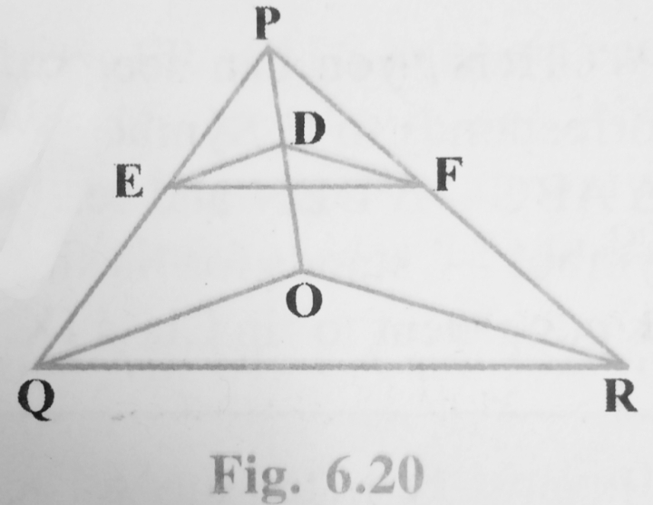
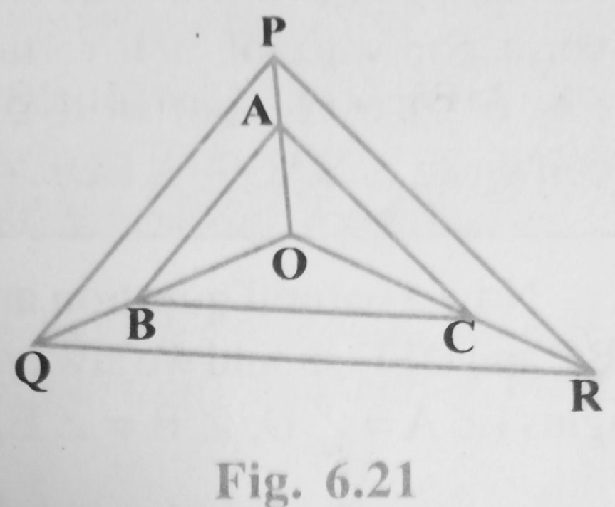

Home > Class 10 Maths > Chapter 6 > Exercise 6.2
Chapter: Triangles | Exercise: 6.2 | Class: 10 | Session: 2026-27
Total Questions: 10 | Topic: Basic Proportionality Theorem
Key Concepts:
In Fig. 6.17, (i) and (ii), DE || BC. Find EC in (i) and AD in (ii).

Part (i): Given AD = 1.5 cm, DB = 3 cm, AE = 1 cm. Since DE || BC, by the Basic Proportionality Theorem,
AD DB = AE EC
1.5 3 = 1 EC
EC = (1 × 3) ÷ 1.5 = 3 ÷ 1.5 = 2 cm.
Answer: EC = 2 cm
Part (ii): Given DB = 7.2 cm, AE = 1.8 cm, EC = 5.4 cm. Since DE || BC, by the Basic Proportionality Theorem,
AD DB = AE EC
AD 7.2 = 1.8 5.4
AD = (1.8 × 7.2) ÷ 5.4 = 12.96 ÷ 5.4 = 2.4 cm.
Answer: AD = 2.4 cm
E and F are points on the sides PQ and PR respectively of a triangle PQR. For each of the following cases, state whether EF || QR:
(i) PE = 3.9 cm, EQ = 3 cm, PF = 3.6 cm and FR = 2.4 cm
(ii) PE = 4 cm, QE = 4.5 cm, PF = 8 cm and RF = 9 cm
(iii) PQ = 1.28 cm, PR = 2.56 cm, PE = 0.18 cm and PF = 0.36 cm
By the converse of the Basic Proportionality Theorem, EF || QR only if PE/EQ = PF/FR.
(i) PE/EQ = 3.9/3 = 1.3, and PF/FR = 3.6/2.4 = 1.5. Since 1.3 is not equal to 1.5,
Answer: EF is not parallel to QR.
(ii) PE/EQ = 4/4.5 = 8/9, and PF/FR = 8/9. Since both ratios are equal,
Answer: EF is parallel to QR.
(iii) EQ = PQ − PE = 1.28 − 0.18 = 1.10 cm, and FR = PR − PF = 2.56 − 0.36 = 2.20 cm.
PE/EQ = 0.18/1.10 = 0.1636, and PF/FR = 0.36/2.20 = 0.1636. Since both ratios are equal,
Answer: EF is parallel to QR.
In Fig. 6.18, if LM || CB and LN || CD, prove that AM/AB = AN/AD.

In triangle ABC, since LM || CB, by the Basic Proportionality Theorem,
AM AB = AL AC ... (1)
In triangle ACD, since LN || CD, by the Basic Proportionality Theorem,
AN AD = AL AC ... (2)
From (1) and (2), since both are equal to AL/AC,
Answer: AM/AB = AN/AD. Hence proved.
In Fig. 6.19, DE || AC and DF || AE. Prove that BF/FE = BE/EC.

In triangle ABC, since DE || AC, by the Basic Proportionality Theorem,
BD DA = BE EC ... (1)
In triangle ABE, since DF || AE, by the Basic Proportionality Theorem,
BD DA = BF FE ... (2)
From (1) and (2), since both are equal to BD/DA,
Answer: BF/FE = BE/EC. Hence proved.
In Fig. 6.20, DE || OQ and DF || OR. Show that EF || QR.

In triangle PQO, since DE || OQ, by the Basic Proportionality Theorem,
PE EO = PD DQ ... (1)
In triangle POR, since DF || OR, by the Basic Proportionality Theorem,
PF FO = PD DQ ... (2)
From (1) and (2), PE/EO = PF/FO. So in triangle PQR, EF divides sides PQ and PR in the same ratio.
Answer: By the converse of the Basic Proportionality Theorem, EF || QR. Hence shown.
In Fig. 6.21, A, B and C are points on OP, OQ and OR respectively such that AB || PQ and AC || PR. Show that BC || QR.

In triangle OPQ, since AB || PQ, by the Basic Proportionality Theorem,
OA AP = OB BQ ... (1)
In triangle OPR, since AC || PR, by the Basic Proportionality Theorem,
OA AP = OC CR ... (2)
From (1) and (2), OB/BQ = OC/CR. So in triangle OQR, BC divides sides OQ and OR in the same ratio.
Answer: By the converse of the Basic Proportionality Theorem, BC || QR. Hence shown.
Using Theorem 6.1, prove that a line drawn through the mid-point of one side of a triangle parallel to another side bisects the third side. (Recall that you have proved it in Class IX).
Let ABC be a triangle, and let D be the mid-point of side AB, so AD = DB. Let a line through D, parallel to BC, meet AC at E.
Since DE || BC, by the Basic Proportionality Theorem (Theorem 6.1),
AD DB = AE EC
Since D is the mid-point of AB, AD = DB, so AD/DB = 1. Therefore AE/EC = 1, which gives AE = EC.
Answer: Hence E is the mid-point of AC, so the line through D parallel to BC bisects the third side AC. Hence proved.
Using Theorem 6.2, prove that the line joining the mid-points of any two sides of a triangle is parallel to the third side. (Recall that you have done it in Class IX).
Let ABC be a triangle, and let D and E be the mid-points of sides AB and AC respectively, so AD = DB and AE = EC.
Since AD = DB, AD/DB = 1, and since AE = EC, AE/EC = 1. Therefore,
AD DB = AE EC
Answer: By the converse of the Basic Proportionality Theorem (Theorem 6.2), DE || BC. Hence the line joining the mid-points of AB and AC is parallel to the third side BC. Hence proved.
ABCD is a trapezium in which AB || DC and its diagonals intersect each other at the point O. Show that AO/BO = CO/DO.
In triangles AOB and COD, since AB || DC and AC is a transversal, angle OAB = angle OCD (alternate interior angles). Since AB || DC and BD is a transversal, angle OBA = angle ODC (alternate interior angles). Also, angle AOB = angle COD (vertically opposite angles).
So triangle AOB ~ triangle COD (by AAA similarity). Since corresponding sides of similar triangles are proportional,
AO CO = BO DO
Cross multiplying, AO × DO = BO × CO, which rearranges to give
Answer: AO/BO = CO/DO. Hence shown.
The diagonals of a quadrilateral ABCD intersect each other at the point O such that AO/BO = CO/DO. Show that ABCD is a trapezium.
In triangles AOB and COD, from the given condition AO/BO = CO/DO, we get AO/CO = BO/DO. Also, angle AOB = angle COD (vertically opposite angles).
So triangle AOB ~ triangle COD (by SAS similarity). Since corresponding angles of similar triangles are equal,
angle OAB = angle OCD.
These are alternate interior angles formed by AB, DC and the transversal AC.
Answer: Since a pair of alternate interior angles are equal, AB || DC. Hence ABCD is a trapezium. Hence shown.
Home | Chapter 6 | Syllabus 2026-27 | Privacy Policy
© 2026 NCERT Solutions Class 10. All rights reserved.